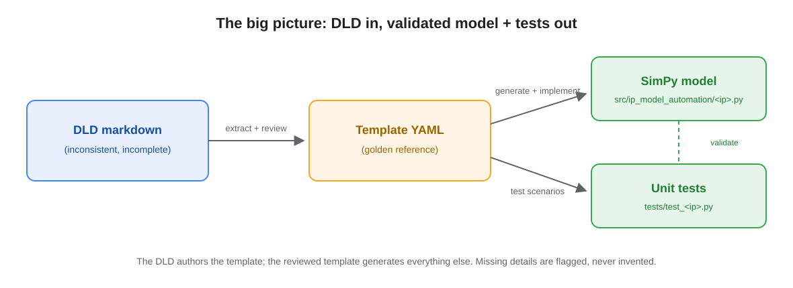
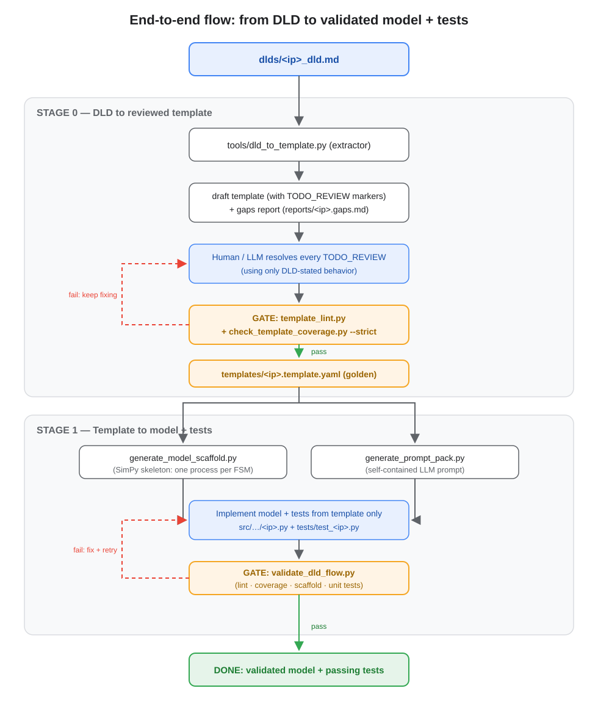
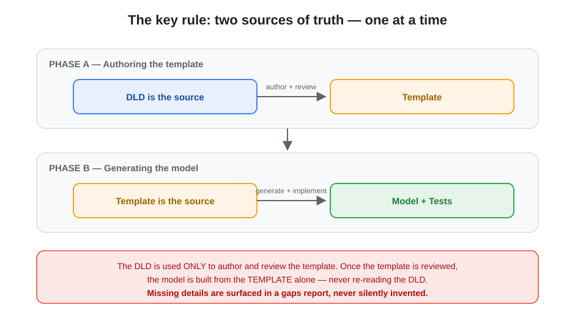
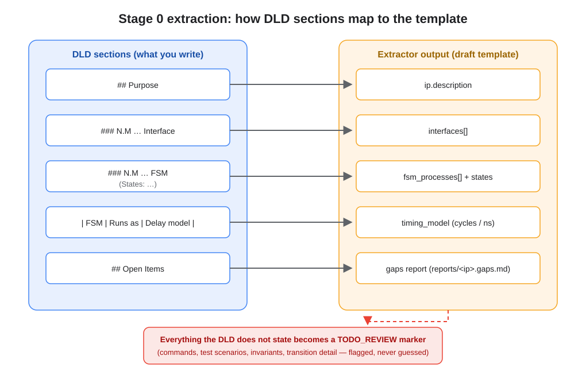
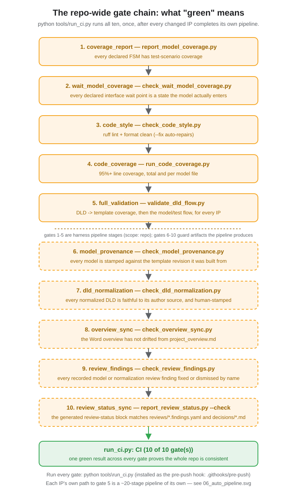
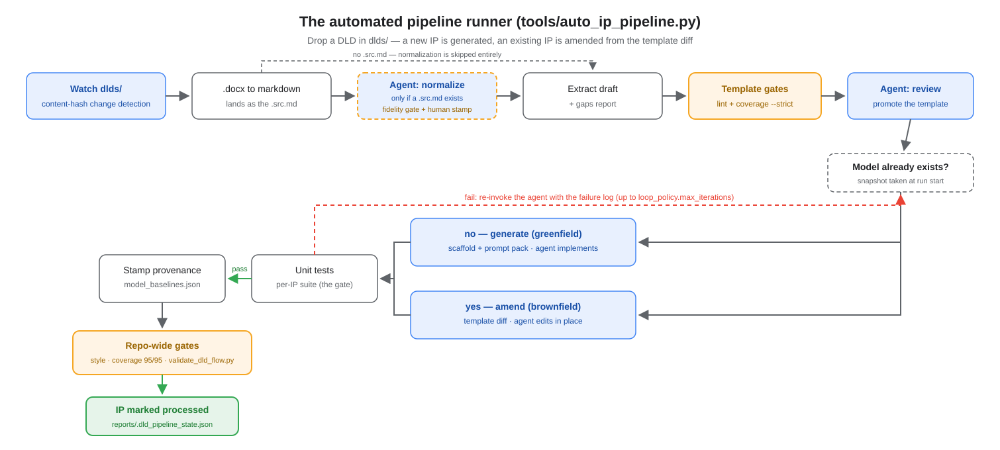
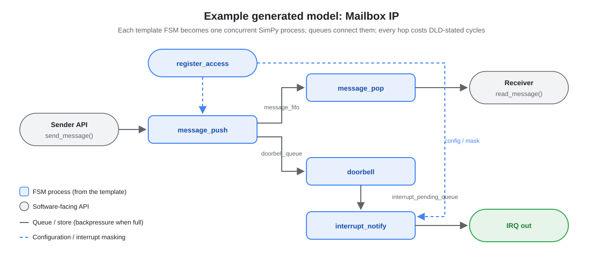

Standalone versions of the pipeline diagrams. Each image is an SVG in this folder —
open it directly, or copy it into slides/documents. The full narrative lives in
docs/project_overview.md.
What goes in (a DLD) and what comes out (a SimPy model + unit tests), with the template as the golden reference in the middle.

Both stages in one view: Stage 0 (DLD → reviewed template, with the review loop) and Stage 1 (template → model + tests, with the validation loop).

The rule the whole system is built around: the DLD authors the template; the reviewed template generates everything else.

Which DLD sections the extractor understands, what template fields they become, and where the un-derivable rest goes (TODO_REVIEW + gaps report).

The gate chain behind a green validate_dld_flow.py — plus the repo-wide code style and coverage hard gates the automated pipeline adds.

How auto_ip_pipeline.py drives the whole chain from a DLD drop — including the greenfield/brownfield fork (generate a new model vs. amend an existing one from the template diff) and the agent retry loop.

The real Mailbox IP model: FSM processes connected by queues, with configuration/masking and backpressure.
